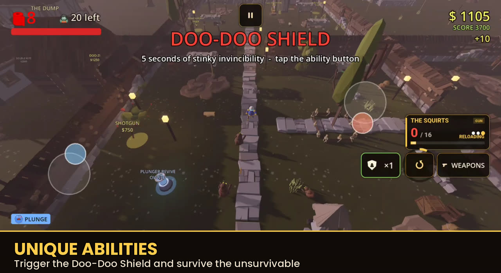

The Final Flush: 4 Bosses, a Secret Map, and Multiplayer 🧟🧻
Tyler Kenny · Sep 27, 2026

It's been a while since the last devlog, and honestly? A LOT has happened. Poopy Zombies went from "solo survival game" to "solo, couch co-op, or up to 4 players over Wi-Fi" — and picked up a whole secret map and 4 bosses along the way.
If you haven't opened the game in a bit, here's everything you missed.
🧟 FOUR BOSSES NOW ROAM THE MAPS
Every 10th round, on most maps, something big climbs out of the muck:
- THE BIG BROWN ONE (Town) — a towering poop mountain that slams the ground and calls up minions
- THE SEPTIC KING (Sewer Subway) — a crowned sewer tyrant who spits sludge from range
- THEE CRUSTY SKIDMARK OF THE 3 DESERTS (Dookie Desert) — fast, sand-crusted, and mean
- THE COLON-EL (Bowel Movement) — a coiled general who commands the gut itself
Each one drops a guaranteed Legendary TP Sheet, a pile of Doo-bloons, and refills your ammo when you flush them. Insta-kill effects don't work on them, and they'll enrage the lower their health gets — so bring friends.
🚽 A SECRET 6TH MAP: BOWEL MOVEMENT
Flush all three of the original bosses (Big Brown One, Septic King, Crusty Skidmark) and a new door unlocks: BOWEL MOVEMENT, seven zones deep inside a giant zombie's gut.
THE GULLET → THE ACID PIT → TUMMY TUNNEL → VILLI VALLEY → THE GAS POCKET → COLON EXPRESS → THE FINAL EXIT
Acid floods the tunnels every few rounds, there's a brand new gut-and-bone visual kit built just for this map, and it's got its own boss (The Colon-El) and two new weapons found nowhere else:
- THE GAS PISTOL — your starting weapon here instead of the pistol
- THE NUGGET THROWER — a wall buy that fires a fan of hard nuggets
- THE PERISTALSIZER (wonder weapon) — a squeeze-wave shot that hits everything in a cone, shoves zombies back, and stuns them
👥 COUCH CO-OP
Grab a second controller and a friend. MULTIPLAYER → COUCH CO-OP → 2 PLAYERS.
- Each player gets their own points, perks, weapons, ability slot, and weapon wheel
- Pick Player 2's skin and death effect independently
- Go down? Your partner has 30 seconds to revive you
- No friendly fire — ever
📶 WI-FI MULTIPLAYER (up to 4 players!)
The big one. MULTIPLAYER → WI-FI (LAN). One of you hosts, everyone else on the same Wi-Fi joins from the list (or types in your IP). Up to 4 players, each on their own phone or PC, each with their own points and loadout.
No internet connection needed — just the same Wi-Fi network.
🧻 TP SHEETS GOT A HUGE UPGRADE
24 sheets now (up from 10), across 4 rarities — Common, Rare, Epic, and a brand new Legendary tier that starts showing up after round 10. Collect them by playing, or spend Doo-bloons to buy a roll directly.
🛠️ AND A LOT OF POLISH
Since this update touched nearly every system in the game, a good chunk of this cycle went into fixing what multiplayer broke along the way:
- Zombies no longer stay stuck red after being shot on a joined Wi-Fi device
- Smoother healing, no more HUD stutter
- Buy messages show up on the right player's screen instead of everyone's
- Faster spawns in late rounds
- The Wi-Fi join screen no longer flickers while searching for games
- Quick-Revive-style perk no longer needs power when playing solo
WHAT'S NEXT
I'm looking at achievements, a boss-rush mode now that all four bosses exist, and eventually taking this to the web so it's playable straight from the browser. If you run into anything weird in co-op or Wi-Fi play, drop a comment below — that mode is brand new and I want to squash whatever's left.
Thanks for playing, and thanks for reading this far. Now go grab a friend and flush something. 🧻💩🧟
— Tyler




Originally posted on itch.io.